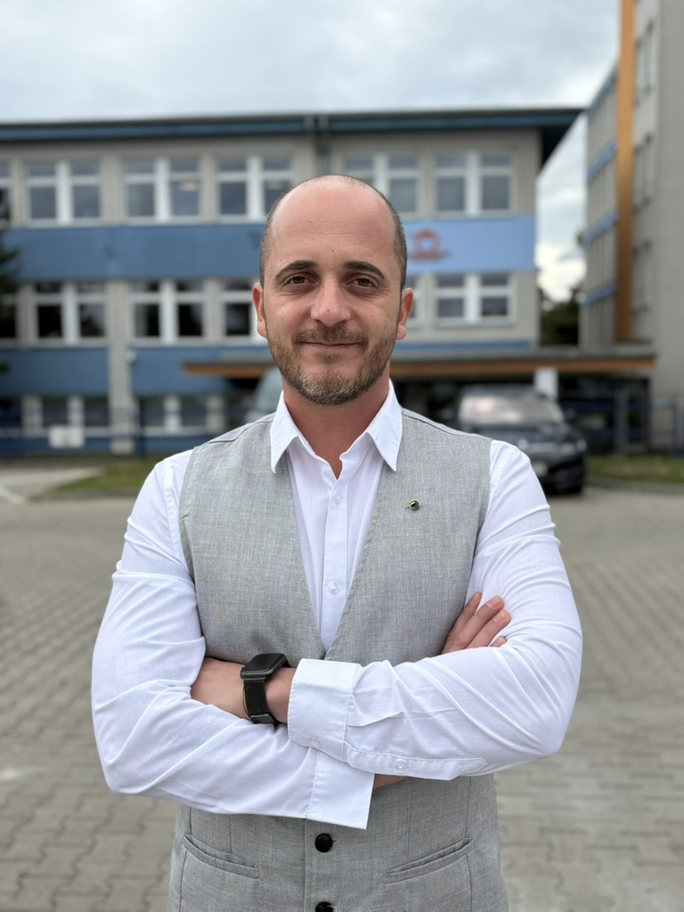
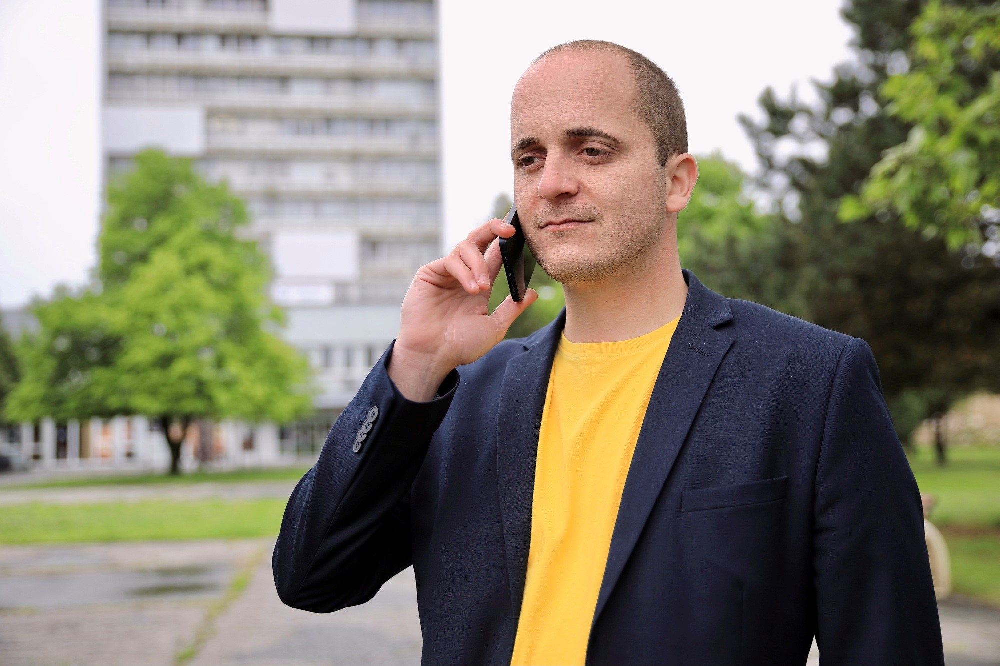
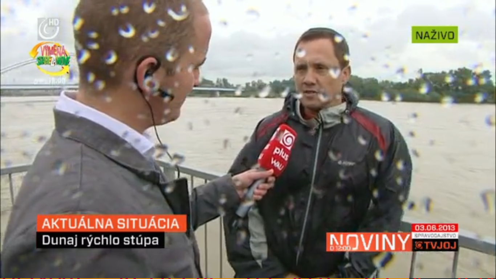
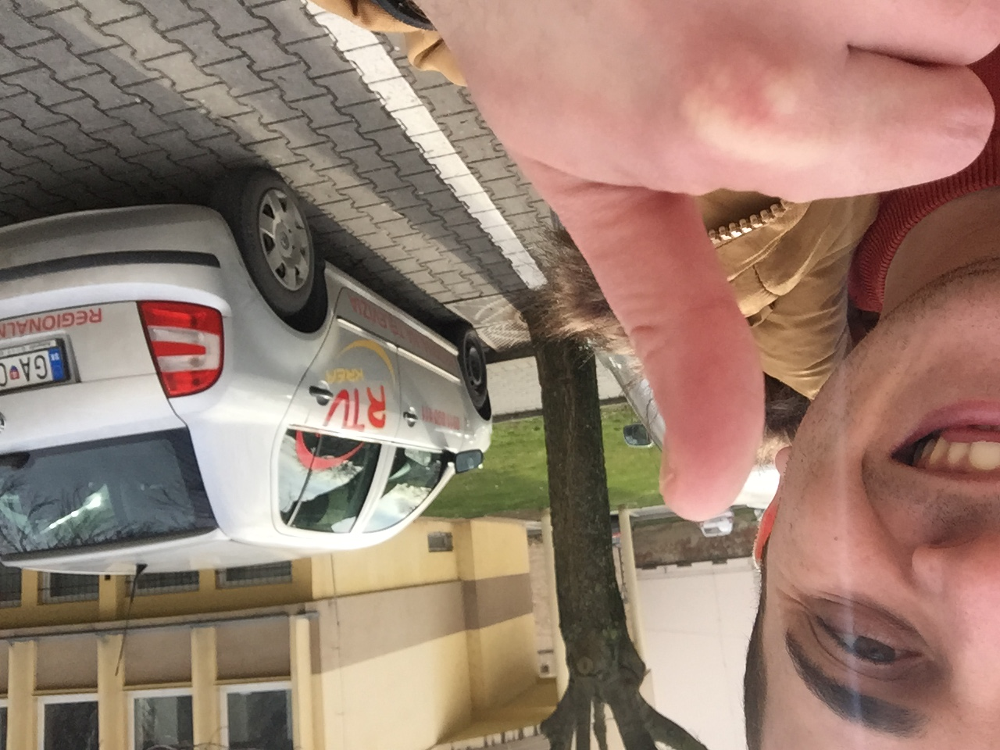

Hovorca ZSSK
Hovorca.
Komunikátor.
Človek z médií.
Polovicu života sa venujem médiám a komunikácii. Začínal som ako televízny reportér, dnes komunikujem v mene veľkých organizácií. Vďaka tejto skúsenosti poznám obe strany – otázky, ktoré kladú novinári, aj zodpovednosť tých, ktorí na ne odpovedajú. V každej z týchto rolí považujem za dôležité hovoriť zrozumiteľne, vecne a s rešpektom k verejnosti.
Moja profesijná cesta →01 — Profesijná cesta
Od reportéra po hovorcu
- 2025 – súčasnosťSúčasné pôsobenie
Hovorca
Železničná spoločnosť Slovensko (ZSSK)
Komunikácia národného železničného dopravcu s médiami a verejnosťou – vyjadrenia, stanoviská a informovanie cestujúcich.

- 2019 – 2025
Hovorca a marketingový manažér
Fakultná nemocnica s poliklinikou Nové Zámky
Komunikácia nemocnice s médiami a verejnosťou spolu so zodpovednosťou za marketing nemocnice.

- 2012 – 2019
Televízny reportér
TV JOJ
Spravodajská práca reportéra celoplošnej televízie – príprava reportáží a práca v teréne.

- 2007 – 2012
Televízny reportér
RTV Krea
Začiatky v regionálnom televíznom spravodajstve a prvé skúsenosti s prípravou reportáží.

02 — Oblasti skúseností
Oblasti skúseností
Mediálna komunikácia
Komunikácia s novinármi, príprava tlačových správ, stanovísk a mediálnych podkladov. Odpovede majú byť presné a vecné, ale zároveň podané tak, aby z nich bolo jasné, čo je na veci podstatné.
Krízová komunikácia
Komunikácia pri mimoriadnych udalostiach a v časovom tlaku. Práca s overenými informáciami aj vtedy, keď ešte nie sú známe všetky okolnosti – a snaha povedať ľuďom včas to, čo potrebujú vedieť.
Zrozumiteľná komunikácia
Nestačí informáciu iba odovzdať. Treba nájsť spôsob, ako ju podať tak, aby ľudí zaujala a pochopili jej význam. Často pomáha príbeh – konkrétna situácia, cez ktorú sa človek s témou stotožní. Príbeh dáva faktom kontext, nenahrádza ich ani ich neprikrášľuje.
Komunikácia s verejnosťou
Priamy a ľudský kontakt s ľuďmi. Vysvetľovanie zložitých situácií, odpovedanie na otázky a hľadanie slov, ktorým porozumie každý – nielen odborník. Cieľom je, aby ľudia informáciám nielen rozumeli, ale vedeli, prečo sa ich týkajú.
03 — LinkedIn
Aj o komunikácii píšem na LinkedIne
Profesijné skúsenosti, postrehy z médií a situácie, ktoré ukazujú, aká dôležitá je zrozumiteľná komunikácia. Niektoré témy poznám z redakcie, iné z druhej strany mikrofónu.
04 — Kontakt